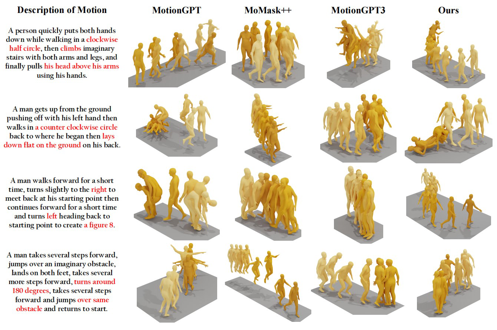
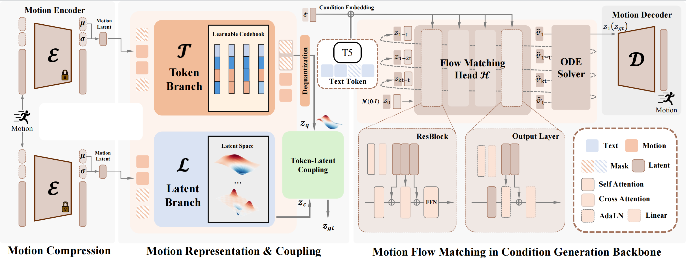
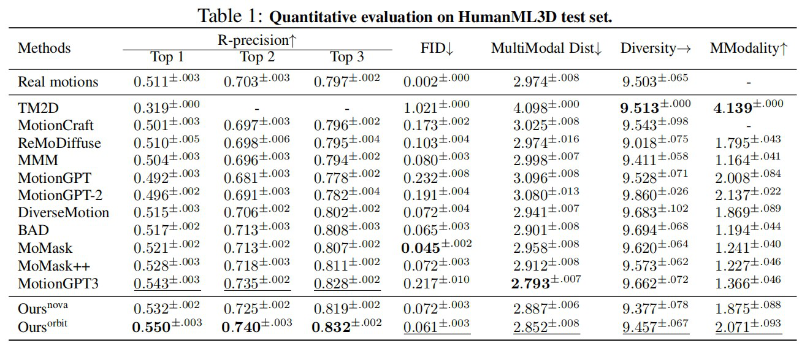
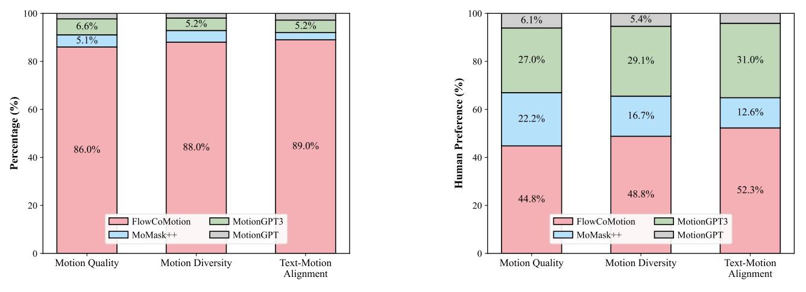

Abstract
Text-to-motion generation is driven by learning motion representations for semantic alignment with language. Existing methods rely on either continuous or discrete motion representations. However, continuous representations entangle semantics with dynamics, while discrete representations lose fine-grained motion details. In this context, we propose FlowCoMotion, a novel motion generation framework that unifies both treatments from a modeling perspective. Specifically, FlowCoMotion employs token-latent coupling to capture both semantic content and high-fidelity motion details. In the latent branch, we apply multi-view distillation to regularize the continuous latent space, while in the token branch we use discrete temporal resolution quantization to extract high-level semantic cues. The motion latent is then obtained by combining the representations from the two branches through a token-latent coupling network. Subsequently, a velocity field is predicted based on the textual conditions. An ODE solver integrates this velocity field from a simple prior, thereby guiding the sample to the potential state of the target motion. Extensive experiments show that FlowCoMotion achieves competitive performance on text-to-motion benchmarks, including HumanML3D and SnapMoGen.
Contributions
- FlowCoMotion improves fine-grained text–motion alignment, especially for numeric, directional, and geometric cues.
- Token–latent coupling combines RVQ-style semantic tokens with continuous latents (plus multi-view distillation on the latent branch).
- Flow matching replaces heavy iterative diffusion sampling with a velocity field and short ODE integration at inference time.
Results preview
Carousel assets live under static/images/carousel1.png … carousel4.png (replace with higher-resolution exports from the paper as needed).

Fine-grained text-to-motion alignment

Method overview

Comparison to strong baselines

HumanML3D & SnapMoGen
BibTeX
@misc{guan2026flowcomotion,
title={FlowCoMotion: Text-to-Motion Generation via Token--Latent Flow Modeling},
author={Guan, Dawei and Yang, Di and Jin, Chengjie and Wang, Jiangtao},
year={2026},
url={https://flowcomotion.github.io},
note={Preprint. Update with venue and arXiv identifier when available.}
}